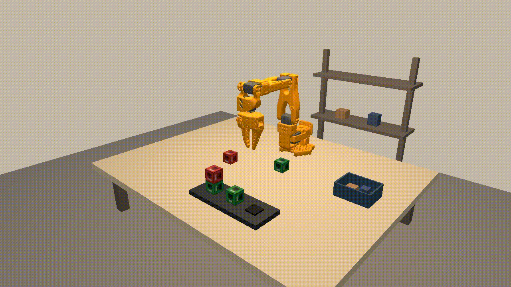

Cut national operations forecast error 75% (4% to 1% MAPE) vs. the previous biweekly forecast, cross-validated on 5 years of data across 10M+ shipments.
ML engineer and builder
Making Complex Systems Visible
Bringing data, algorithms, and simulations to life through interactive visualization.
Selected work
Robotics VLA
Fine-tuned the SmolVLA (450M) action expert to follow language commands, with attention visualized across 16 layers and a 7-joint MuJoCo simulator.

Rocket League Analyzer
A LangChain tool-calling LLM over match telemetry, plus a Dockerized 3D dashboard synced to replay playback.
Maple Market
A visual explorer for big Canadian stocks: TSX companies as planets, a heatmap, and plain-English tools for compare, dividends, and compound growth.
StickDrift
A PS5-controller movement check disguised as games for long-term care.
Assembly Platformer
An 8-bit platformer written entirely in MIPS assembly, playable in the browser.
Light2D: Dispersion in 2D
A 2D light transport simulator in C: mirrors, scatterers and glass lenses, with colour dispersion that splits white light into rainbows.
About
I am a recent Honours BSc graduate from the University of Toronto, with a double major in Computer Science and Mathematics. My work sits between statistics and software: forecasting systems, machine learning models and the tooling that makes them usable.
I have shipped production forecasting at a national logistics company, built a robotics policy with language conditioning, and written everything from a 2D light simulator in C to a platformer in assembly. I work best on small teams where one person owns a problem end to end.
Reconciled $1M+ across 130,000+ HCV payment records with algorithmic outlier detection in Python/Excel (processing time -95%).
AI Olympics 1st Place Winner · Hack the Valley 9 Award Winner · MTO Road Safety Solutions, 2nd place · UofT Frank Faubert Scholarship.